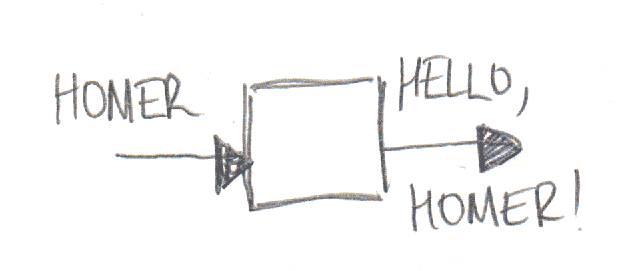

Сложность

Абстракции важны
Добавлять новые штуки, подходящие под абстракцию, легко

Абсолютная гибкость

Спрашивайте почему
Что и как недостаточно.

Переабстрагирования можно избежать.
Простота
А что если что-то пойдёт не так?
Что если вдруг надо заменить X на Y?


Газозащищённая каляска...
А пойдёт ли не так?
- Насколько вы уверены?
- Если всё-таки уверены, как тяжело будет отрефакторить?
Пишите код под задачу, а не под переиспользование

Рефакторите постоянно
Это может быть лучше, чем много слоёв.

Если, конечно, вы не создаёте библиотеку или фреймворк...

Сделать просто не легко.
Авторитеты

- Отцы-основатели
- Видные люди в OpenSource
- Докладчики на конференциях
- Ведущие разработчики
- и т.д.
Они же всё знают!

Но...
Не верьте им!

И мне тоже ;)
Есть проблемы:
- Непонимание
- Ошибки

- Контекст
- Подготовка
- Описание
- ...

10000 часов сделают любого супергероем.
Но он всё ещё будет ошибаться.
Не верьте!
Спрашивайте, учитесь, делайте выводы.
О фреймворках...
Фреймворки это инструменты.

Но часто к ним относятся как к авторитетным источникам.
А на самом деле...

Фреймворк не всегда спасает.
Работайте так, как удобно вам и вашей команде. Учите лучшие практики чтобы адаптировать их под свои задачи. Не копируйте вслепую.
Факты

Ориентируйтесь на факты, а не на мнения. Не поддавайтесь эмоциям.
Это сложно...


Страх


Боссы
Новый работник биржи потерял $5M. Он был уверен, что его уволят...
На следующий день этого не произошло и он спросил почему...
Ответ был такой...
Мы только что инвестировали в твоё обучение $5M. Ты слишком ценный сотрудник.
Как исправить, а не кто виноват.

Они мыслят на уровне компании или выше.
Иногда наказание, всё-таки, лучший выход.
Но обычно нет.
Будьте честны.

Коллеги и сообщество

Что скажут коллеги?

Кому-нибудь это не понравится... лучше не буду выкладывать.

или хуже...
Я использую все крутые паттерны в моей следующей либе потому что они всем нравятся.


Есть древняя байка


С тех пор ничего не поменялось :)
Уверенность приходит с опытом!
Но где его взять?

Пробуйте новые клёвые штуки!
* Но не на боевом сервере
Учитесь у авторитетов.
Но проверяйте фактами!
Делитесь.
Все мы люди
Все мы разные
И все не совершенны
И это нормально

Бонус